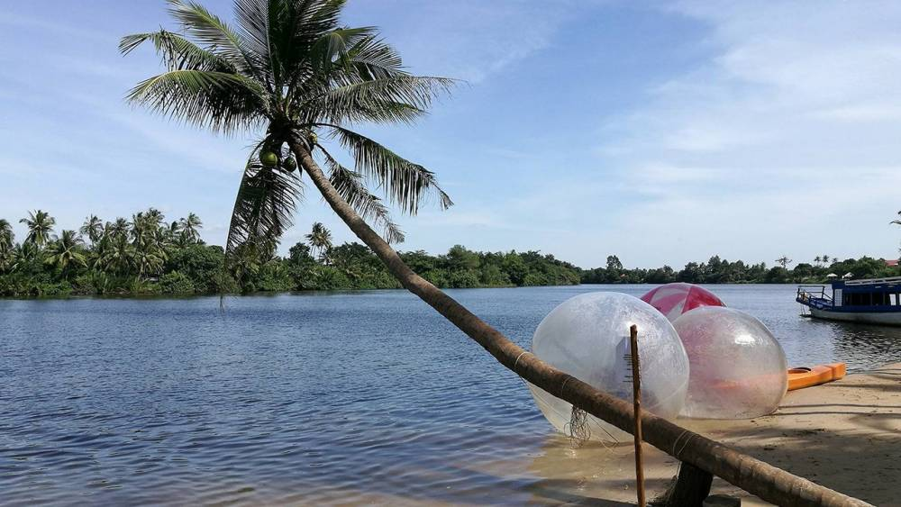
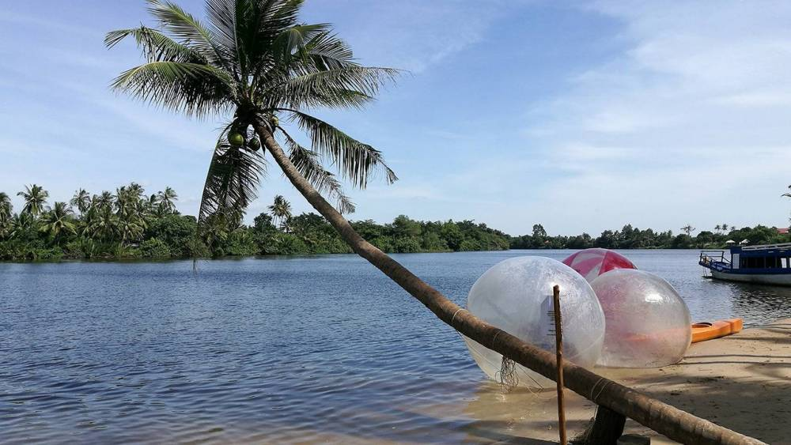
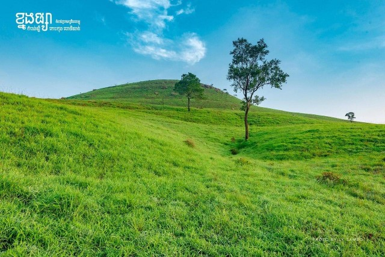
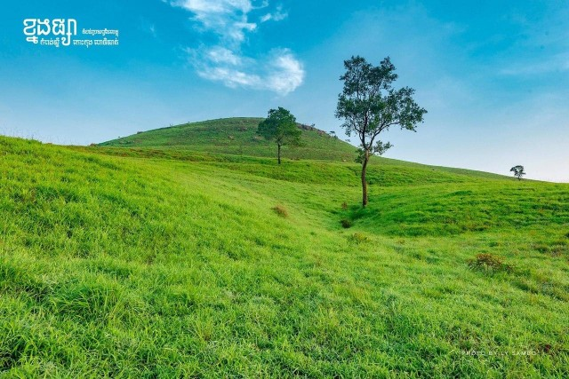

Ta Barang Coast, Sihanoukville
ឆ្នេរតាបារាំង តំបន់ទេសចរណ៍ក្នុងខេត្តព្រះសីហនុ ពិតជាមានទេសភាពស្អាតខ្លាំង មិនចាញ់កោះរ៉ុងប៉ុន្មាននោះទេ។ ឆ្នេរនេះមានខ្សាច់សក្បុស ទឹករាក់ស្រួលលេង និងមានខ្យល់បរិសុទ្ធធម្មជាតិត្រជាក់កាយតែម្ដង ស្ងប់ស្ងាត់ ជាមួយទេសភាពស្រស់ត្រកាល។ កុំថាឡើយទេសភាពទាក់ចិត្តមិនធម្មតារបស់ឆ្នេរតាបារាំង សូម្បីទេសភាពនៅតាមផ្លូវទៅតំបន់ទេសចរណ៍នេះ ក៏ស្អាតខ្លាំង មិនធម្មតាដែរ។ លោកអ្នកអាចចុះថតរូបលេង ជាមួយវាលស្មៅខ្ពស់ទាបយ៉ាងក្រាស់ដេលដាសមើលទៅដូចនៅបរទេសអ៊ីចឹង។ ឆ្នេរនេះនៅ ភូមិរិទ្ធី 2 ឃុំកែវផុស ស្រុកស្ទឹងហាវ ខេត្តព្រះសីហនុ ។

Bokor, Kompot
ឧទ្យានជាតិព្រះមុនីវង្សភ្នំបូកគោ ត្រូវបានគេស្គាល់ថាជា រមណីយដ្ឋានភ្នំបូកគោដែល ត្រូវបានបោះបង់ចោល ដែលជាសំណង់ដាច់ស្រយាលមួយដែលកសាងដោយពួកអាណានិគមនិយមបារាំងនៅឆ្នាំ១៩២១ ពួកគេក៏បានកសាងព្រះវិហារកាតូលិកនៅក្បែរនោះនៅឆ្នាំ១៩២៨ ដែលជាកន្លែងដ៏កម្រមួយនៅក្នុងប្រទេសកម្ពុជា។ ឧទ្យាននេះត្រូវបានគេដាក់ឈ្មោះតាមព្រះមហាក្សត្រ ព្រះបាទស៊ីសុវត្ថិមុនីវង្ស ដែលធ្លាប់ទៅទស្សនាតំបន់នោះហើយបានស្លាប់នៅទីនេះក្នុងឆ្នាំ១៩៤១ ។ ព្រះបាទមុនីវង្សបានបញ្ជាឱ្យសាងសង់ព្រះវិហារព្រះពុទ្ធសាសនានៅតំបន់នេះក្នុងឆ្នាំ១៩២៤ ។
Kep Coast, Kompot
ឆ្នេរខ្សាច់នៃខេត្តកែប មានលក្ខណៈតូចចង្អៀត និងមានគ្រួសខ្មៅ ពុំមានខ្សាច់ស ដូចជាឆ្នេរដ៏ទៃទេ។ ភ្ញៀវទេសចរ អាចអញ្ជើញមកកម្សាន្ត និងស្រូបយកខ្យល់អាកាសបរិសុទ្ធនៅតាមឆ្នេរសមុទ្រដែលមានទឹករលកខ្មួលខ្មាញ់ និងអាចទទួលទាននូវរសជាតិក្តាមសមុទ្រស្រស់ៗ ដែលមានឱជារសឈ្ងុយឆ្ងាញ់ពិសា។ ជាពិសេសគឺបានគយគន់នឹងរូបសំណាកនារី សិលាចាំប្តី ដ៏ធំមួយដែលកំពុងតែ អង្គុយបែរមុខ រកទៅផ្ទៃទឹកសមុទ្រដ៏ធំល្វឹងល្វើយ និងមានទឹកមុខស្រពត់ស្រពន់ ហាក់ដូចជាបានបង្កប់នូវអត្ថន័យមួយដ៏សែនអន្លង់អន្លោច ពិបាកនឹងថ្លែងប្រាប់រាល់អ្នកទេសចរណ៍ទាំងអស់។
Doung te Coast, Sihanoukville
នៅទីនោះ មានដូងទេរយ៉ាងស្រស់ស្អាតលយចូលទៅទឹកបឹងបង្អួតសម្រស់យ៉ាងត្រកាល។ ទេសភាពឆ្នេរមាត់ព្រែកដ៍ស្រស់ស្អាត សម្រាកលំហែកាយ ហែលទឹកកម្សាន្ត ទទួលទានអាហារឆ្ងាញ់ៗ មិនតែប៉ុណ្ណោះ ភ្ញៀវទេសចរអាចរកជិះក្ដាររំអិលកោងខ្ពស់ ជិះទូកកាយ៉ាក់ ដោយចំណាយប្រាក់ប្រមាណ ៣ដុល្លារម្នាក់។ រមណីយដ្ឋានដូងទេរ នេះស្ថិតនៅក្នុងភូមិស្នំប្រាំពីរ ឃុំម៉ាក់ប្រាង្គ ស្រុកទឹកឈូ ខេត្តកំពត គឺនៅជាប់នឹងព្រែកកំពត។យើងអាចធ្វើដំណើរបាន តាមបណ្តោយផ្លូវទៅរមណីយដ្ឋានទឹកឈូ ដែលមានទីតាំងស្ថិតនៅជាប់ ហ្រ្គេដកំពត នៅឃុំម៉ាក់ប្រាង្គ ស្រុកទឹកឈូ ខេត្តកំពត

Angkor Way, Siem Reap
ប្រាសាទអង្គរវត្ត ឬប្រាសាទអង្គរតូចមានទីតាំងស្ថិតនៅភាគខាងជើងនៃក្រុងសៀមរាបនៃខេត្តសៀមរាប។ ប្រាសាទអង្គរវត្តជាប្រាសាទព្រហ្មញ្ញសាសនាធំបំផុត និងជាវិមានសាសនាដ៏ធំបំផុតនៅក្នុងលោក។ ប្រាសាទនេះត្រូវបានកសាងឡើងដោយព្រះបាទសូរ្យវរ្ម័នទី២ ដែលជាស្នាដៃដ៏ធំអស្ចារ្យ និងមានឈ្មោះល្បីល្បាញរន្ទឺសុះសាយទៅគ្រប់ទិសទីលើពិភពលោក។ នៅចំកណ្ដាលនៃប្រាសាទបញ្ឈរនូវជួរចតុរង្គនៃប៉ម។ មិនដូចប្រាសាទនៅតំបន់អង្គរភាគច្រើនទេ អង្គរវត្តបែរមុខទៅទិសខាងលិច តាមការស្រាវជ្រាវរបស់អ្នកសិក្សាបានវែកញែកថាជាចំណុចសំខាន់នៃប្រាសាទនេះ។
 

 
